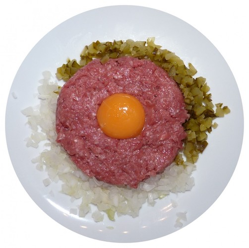

The Adventures of a Kotlin-based Library Developer
Hubert Kosacki
Kotlin ❤️ Java
Java ❤️ Kotlin
❓🤔
Binary compatibility
Binary compatibility - what's this?
https://pxhere.com/en/photo/1365486
It's about replacing the Java compiled classes without recompiling their consumers
What affects the binary compatibility?
- ✅ internal, non-exposed changes
- ✅ public API extensions
- ❌ almost any public API deletions
What exactly breaks the compatibility - eg.
- Deleting a public API (class, interface, enum)
- Deleting a public package
- Hiding a public API's member (field, method, etc.)
- Renaming a public method or class member
- Adding abstract methods in public API
- Adding parameters to method calls
- Changing the final and static modifiers
- …and many, many more
Enjoy your raw stuff ;)
 https://pxhere.com/en/photo/643053Now, what a simple Kotlin conversion can break?
The Kotlin traps
Named arguments
Java:
Renaming parameter name is binary compatible
Kotlin:
💥 not anymore‼️
Named arguments become a part of API
fun someLongParamsListFun(
alpha: Any,
bravo: Boolean,
charlie: Char,
delta: Double,
echo: Any,
foxtrot: Float
): Int {
return (delta + foxtrot).toInt()
}
val result =
someLongParamsListFun(Unit, false, 'z', 3.0, Unit, 0.4f)
val result2a = someLongParamsListFun(
alpha = Unit,
bravo = false,
charlie = 'z',
delta = 3.0,
echo = Unit,
foxtrot = 0.4f
)
val result2b = someLongParamsListFun(
foxtrot = 0.4f,
echo = Unit,
charlie = 'z',
delta = 3.0,
bravo = false,
alpha = Unit
)
Data classes
Kotlin data class
- POJO on steroids
- Autogeneration of equals() and hashCode()
- Destructuring - componentN() functions
- copy() function (with default parameters)
data class - how to extend safely?
- Put new parameters at the end (Destructuring)
- Make these parameters optional - provide a default value
- Put the @JvmOverloads annotation on the constructor
data class - how to extend safely?
data class Data @JvmOverloads constructor (
val yankee: Boolean,
val xray: Float,
val zulu: String? = null
)
💥copy() function will get changed anyawy
Should we resign from using data classes at all❓
🤔
Static members
public class Util {
public static final int RESULT = 4;
public static int PENDING_VALUE = 0;
public static int getRandomNumber(){
return 4; // chosen by a fair dice roll
// guaranteed to be random
}
}
public class UtilConsumer {
public void printRollResult(){
System.out.println(Util.getRandomNumber());
}
}
Inspired by https://xkcd.com/221/
Static functions
object Util { // kt
const val RESULT = 4
var PENDING_VALUE = 0
@JvmStatic
val randomNumber: Int
get() = 4 // chosen by a fair dice roll
// guaranteed to be random
}
public class UtilConsumer { // java
public void printRollResult(){
System.out.println(Util.INSTANCE.getRandomNumber());
}
}
Static fields/properties
object Util { // kt
const val RESULT = 4
@JvmField
var PENDING_VALUE = 0
@JvmStatic
val randomNumber: Int
get() = 4 // chosen by a fair dice roll
// guaranteed to be random
}
public class UtilConsumer { // java
public void printRollResult(){
System.out.println(Util.getRandomNumber()
+ Util.INSTANCE.PENDING_VALUE + Utils.RESULT);
}
}
Appendix: Semantic versioning
x.y.z
major.minor.patch
1.0.0 → 1.0.2 ✅
1.0.0 → 1.1.0 ✅
1.9.1 → 2.0.0 ❌
Summary
- Kotlin != Java
- Should we build libs using Kotlin?
- 👍 Create from scratch
- ☝ Port Java-based ones
- Consider your potential users' needs
Resources
- Public API challenges in Kotlin, Jake Wharton
- Java Binary Compatibility, Joshua Engel
- Java Binary Compatibility Part 2, Joshua Engel
- Evolving Java-based APIs 2, Eclipse Wiki
- Effective Kotlin, Marcin Moskała
- Semantic Versioning 2.0.0
Created with Reveal.js
THE END
Thank you for the attention!
https://hkosacki.github.io/adventures-of-a-kotlin-library-developer/#/ hkosacki
hkosacki
 @hkosacki
@hkosacki